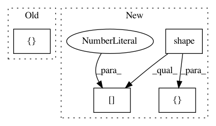

c6035419bcd9637fe43c48f4bc71a66310c275c7,contents/5_Deep_Q_Network/DQN_modified.py,DeepQNetwork,_build_net,#DeepQNetwork#,68
Before Change
// ------------------ build target_net ------------------
with tf.variable_scope("target_net"):
// c_names(collections_names) are the collections to store variables
c_names = ["target_net_params", tf.GraphKeys.GLOBAL_VARIABLES]
self.q_next = build_layers(self.s_, c_names, n_l1, w_initializer, b_initializer)
with tf.variable_scope("q_target"):
q_target = self.r + self.gamma * tf.reduce_max(self.q_next, axis=1, name="Qmax_s_") // shape=(None, )
After Change
q_target = self.r + self.gamma * tf.reduce_max(self.q_next, axis=1, name="Qmax_s_") // shape=(None, )
self.q_target = tf.stop_gradient(q_target)
with tf.variable_scope("q_eval"):
a_indices = tf.stack([tf.range(tf.shape(self.a)[0], dtype=tf.int32), self.a], axis=1)
self.q_eval_wrt_a = tf.gather_nd(params=self.q_eval, indices=a_indices) // shape=(None, )
with tf.variable_scope("loss"):
self.loss = tf.reduce_mean(tf.squared_difference(self.q_target, self.q_eval_wrt_a, name="TD_error"))
In pattern: SUPERPATTERN
Frequency: 3
Non-data size: 4
Instances
Project Name: MorvanZhou/Reinforcement-learning-with-tensorflow
Commit Name: c6035419bcd9637fe43c48f4bc71a66310c275c7
Time: 2017-08-15
Author: morvanzhou@gmail.com
File Name: contents/5_Deep_Q_Network/DQN_modified.py
Class Name: DeepQNetwork
Method Name: _build_net
Project Name: google/tf_mesh_renderer
Commit Name: 8aaabd6dfcd2f4ae5618ef08657bbba82e8bd69f
Time: 2019-05-28
Author: david.erler@gmail.com
File Name: mesh_renderer/rasterize_triangles.py
Class Name:
Method Name: rasterize_clip_space
Project Name: jakeret/tf_unet
Commit Name: 64ef74050629e45e46090b3e79375788223786ba
Time: 2016-12-06
Author: felix.gruen@outlook.de
File Name: tf_unet/layers.py
Class Name:
Method Name: crop_and_concat